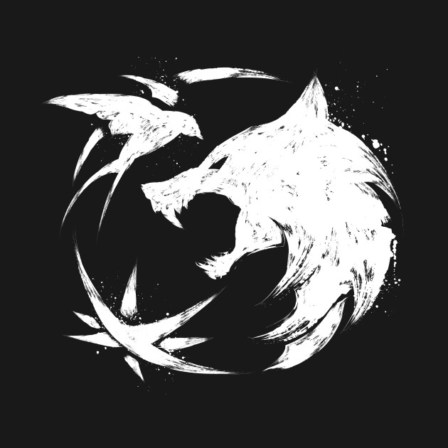
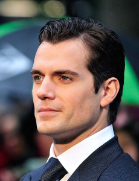
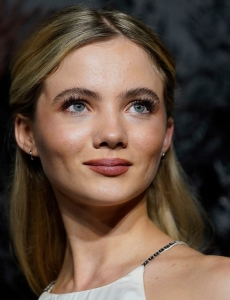
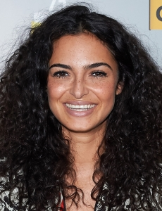
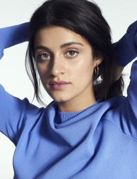

Historia de The Witcher
|
The Witcher é uma franquia de fantasia que surgiu durante a década de 1980, na Polônia. Em 1986, o autor Andrzej Sapkowski enviou um conto chamado “O Bruxo” para um concurso da revista Fantastyka. A história acompanha um mutante matador de monstros, contratado por um rei para reverter uma maldição. O conto não venceu a disputa - ficou em terceiro lugar -, mas teve resposta positiva o bastante para que Sapkowski continuasse a escrever histórias utilizando o tal mutante, chamado de Geralt de Rivia. Assim, durante o restante dos anos 80, o autor continuou expandindo esse universo com vários contos isolados - mais tarde reunidos em duas coletâneas, O Último Desejo e A Espada do Destino. Já em 1994, Sapkowski elevou sua criação com O Sangue dos Elfos, início de uma saga de cinco romances estrelados por Geralt e outras personagens recorrentes dos contos, publicando um livro por ano até 1999. |
|  |
Adaptação da netflix
|
The Witcher ganhou sua adaptação na netflix, criada por Lauren Schmidt Hissrich, e que já foi renovada para uma segunda temporada. Geralt de Rivia (Cavill) é um bruxo, um mutante com poderes especiais que mata monstros por dinheiro. A Terra está num estado de caos enquanto o império de Nilfgaard procura expandir o seu território. Entre os refugiados desta luta está Cirilla (Freya Allan), também chamada Ciri, a Princesa de Cintra, que está sendo perseguida por Nilfgaard. Ela e o Geralt estão destinados um ao outro. Em suas aventuras Geralt também conhece Yennefer de Vengerberg (Anya Chalotra), uma feiticiera. |
Casting da adaptação |
|||
|
Henry Cavill(Geralt)  |
Freya Allan(Ciri)  |
Anna Shaffer(Triss)  |
Anya Chalotra(Yennefer)  |